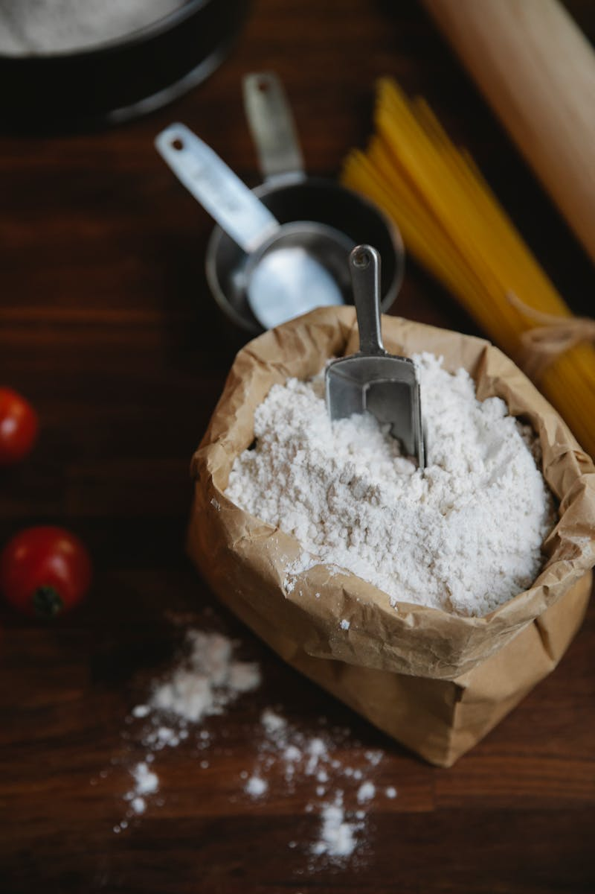

Shop · Flour · Wheat
Organic Gehun Atta
Whole wheat, the way it should be.
Organic Gehun Atta — whole wheat flour cold-milled the slow way. Sourced from small farms growing without pesticides or chemical fertilisers, ground in granite chakkis so the bran, the germ and the gentle nuttiness all stay intact.
₹180
Cold milledStays fresh longer
2-day dispatchFrom mill to door
Honest returnsWithin 7 days
Khapli (emmer) is a hardy, low-gluten ancient wheat. It is naturally lower in glycaemic load than common wheat, making it a quiet favourite among diabetic and pre-diabetic households. The flavour is gently nutty, with a softness that holds shape in rotis and parathas.
Grown by farmer collectives near Indore, harvested January through March. We mill in a granite stone chakki at 32 RPM, in batches of 40kg. Every batch is tested for moisture, ash and protein.
- Origin: Indore, Madhya Pradesh
- Mill: Granite stone, cold
- Harvest: Single-season
Energy 332 kcal · Protein 12.6g · Carbohydrate 67g · Dietary Fibre 11.2g · Fat 2.1g · Iron 4.6mg.
No preservatives. No additives. No bleach. Just slow-milled wheat.
Use as you would any atta. Khapli takes a little more water than refined flour and rewards a longer rest. We recommend resting the dough for at least 20 minutes before rolling. Excellent for rotis, parathas, thalipeeth and even short-crust pastry.
Best stored in an airtight container, away from sunlight. Stays fresh for 90 days from milling at room temperature, or 6 months refrigerated. Each pack is stamped with its mill date, never an arbitrary "best before".